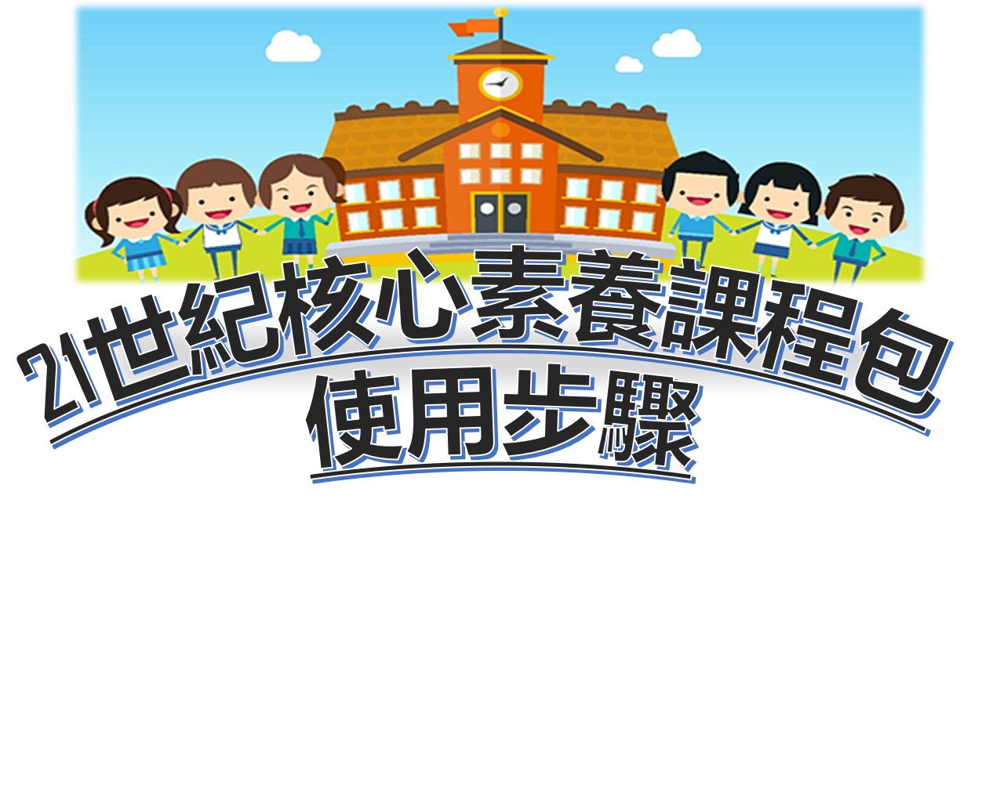
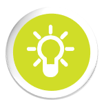
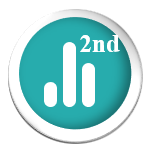

課程主旨
適用對象
教材列表
微課程介紹
課程工作坊
回到因材網

第一次線上任務操作
教師選擇使用卷一讓學生在電腦教室進行第一次線上任務操作練習。
核心素養診斷報告(第一次)
教師可透過21世紀核心素養診斷報告瞭解學生狀態，自由選擇更多微課程教材進行21世紀核心素養教學。

微課程
教師於課堂使用微課程教材進行約兩~四堂課之教學。
第二次線上任務操作
教師選擇使用卷二讓學生在電腦教室進行第二次線上任務操作。

核心素養診斷報告(第二次)
教師可透過21世紀核心素養診斷報告瞭解學生核心素養提升狀態。